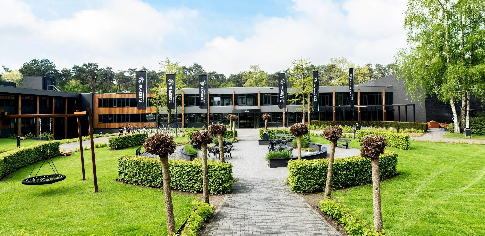
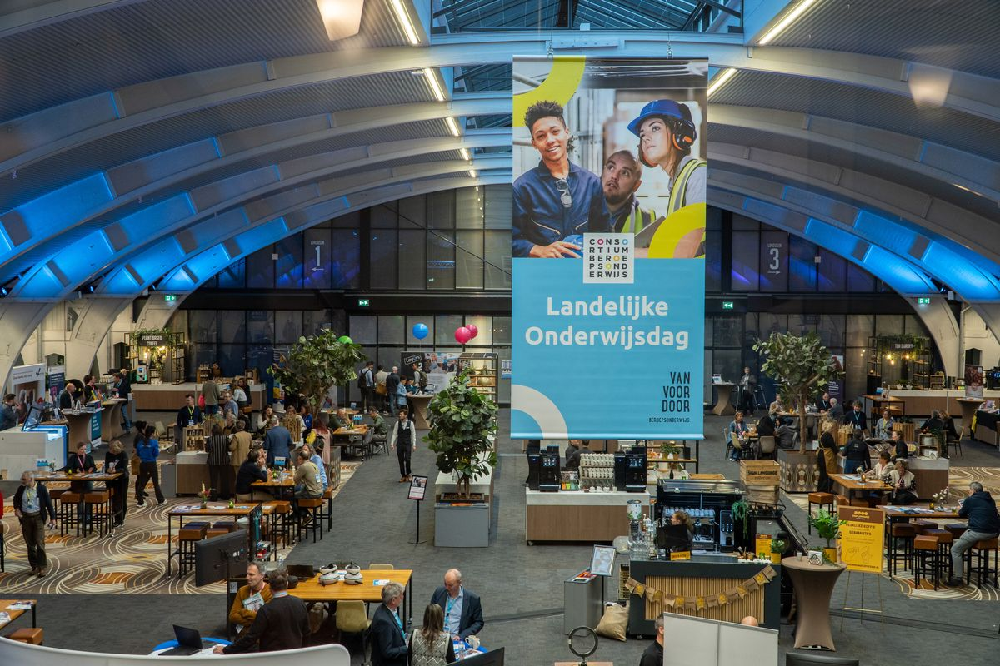
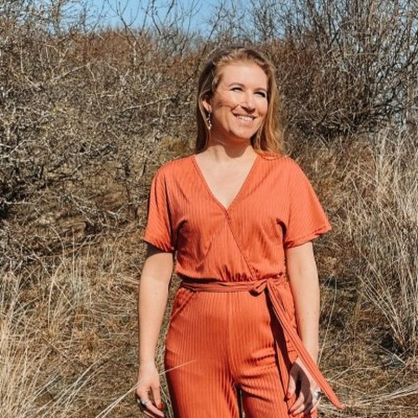
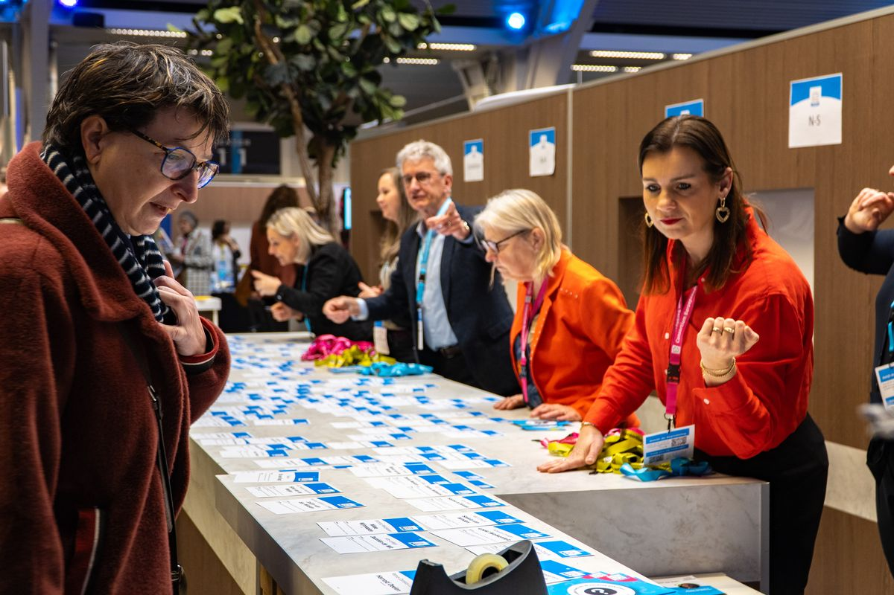
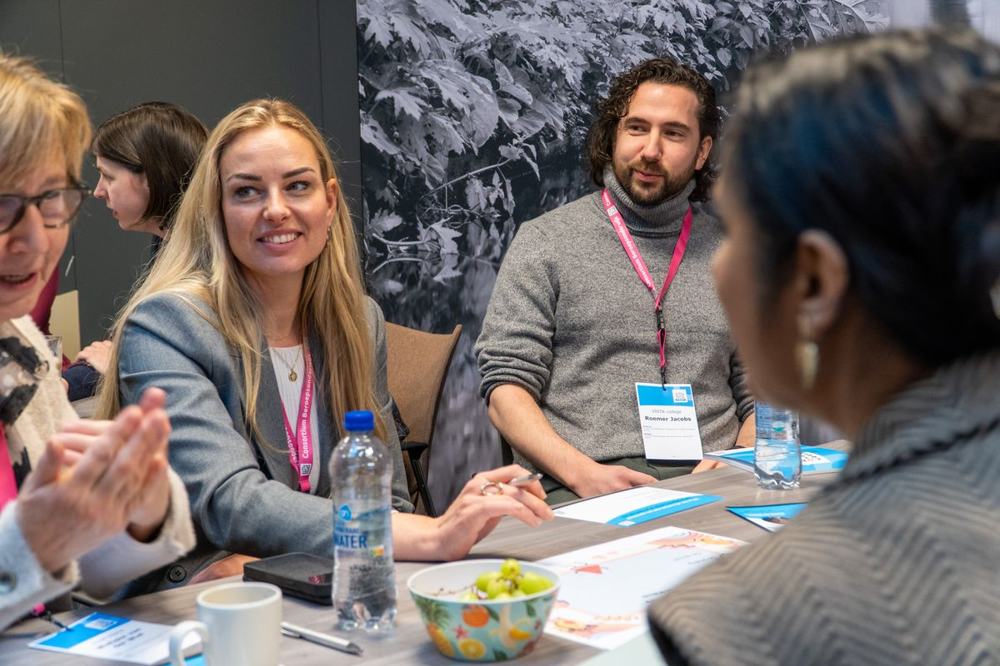
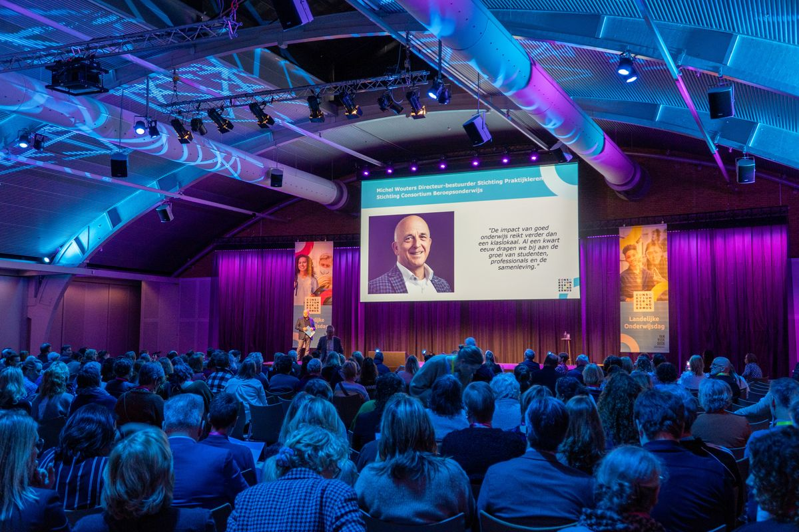
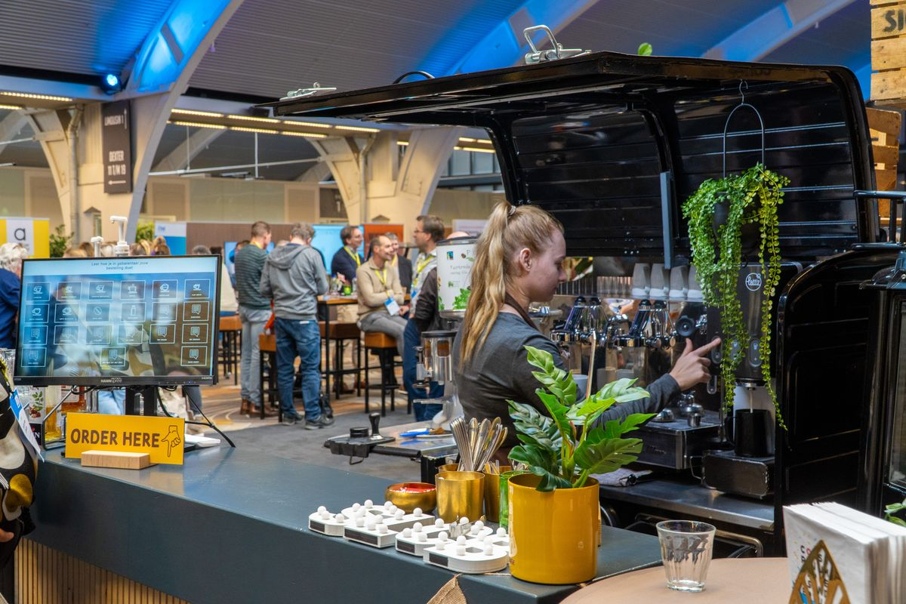
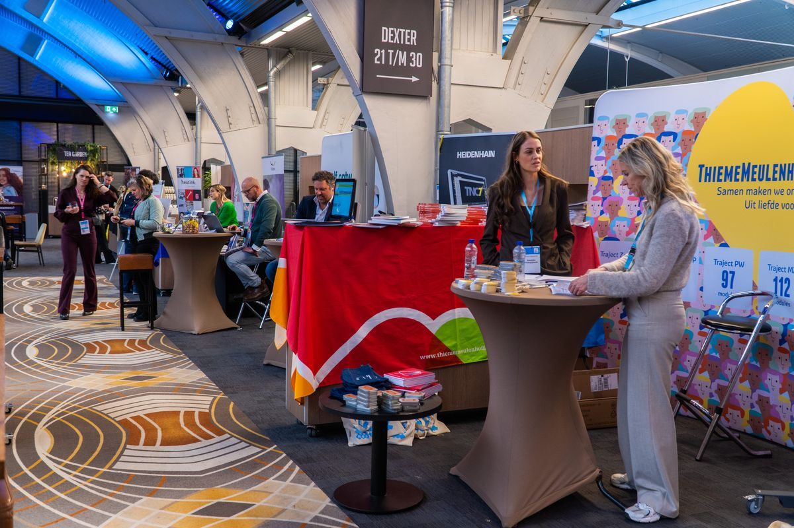

Jolien Dopmeijer
Projectleider Studenten bij het Trimbos-instituut

Dé ontmoetingsdag voor het beroepsonderwijs.
De wereld om ons heen verandert in hoog tempo. Het beroepsonderwijs verandert mee. Juist daarom is het belangrijk om elkaar te ontmoeten, ervaringen uit te wisselen en samen vooruit te kijken.
Tijdens de Landelijke Onderwijsdag 2026 brengen we onderwijsprofessionals van scholen uit het hele land en partners uit het werkveld samen. Op 24 november staat een inspirerend programma klaar. Praktijkverhalen van scholen, actuele thema's en ontmoetingen met collega's uit heel Nederland: je hebt de keuze uit tientallen sessies over onderwerpen die spelen in het beroepsonderwijs. Van AI en examinering, zorgtechnologie en internationalisering tot studentenwelzijn.

Scholen laten zien hoe zij de nieuwste ontwikkelingen vertalen naar de praktijk en gaan hierover graag met je in gesprek.
Maak alvast kennis met een aantal van de inspirerende sprekers van 2026.
Projectleider Studenten bij het Trimbos-instituut
Practor AI, Practoraat Interactieve Technologie van Yonder

Programma Manager Duurzaamheid bij Talland College
Honderden onderwijsprofessionals, inspirerende keynotes, praktische sessies en waardevolle ontmoetingen. Bekijk de sfeer van de vorige editie.
Bekijk de aftermovie 2025




De Landelijke Onderwijsdag brengt professionals uit het beroepsonderwijs samen die willen leren, inspireren en samen bouwen aan het onderwijs van morgen. Of je nu voor de klas staat, onderwijs ontwikkelt of strategische keuzes maakt: op 24 november ontmoet je vakgenoten uit heel Nederland.
Ontdek vernieuwende werkvormen, inspirerende praktijkvoorbeelden en concrete ideeën die je direct kunt inzetten in jouw lessen.
Blik vooruit op de ontwikkelingen die het beroepsonderwijs de komende jaren vormgeven en ontmoet collega's uit het hele land.
Laat je inspireren door innovatieve onderwijsconcepten, actuele ontwikkelingen en succesvolle praktijkcases uit het beroepsonderwijs.
Versterk de samenwerking tussen onderwijs en praktijk, ontmoet onderwijsprofessionals en ontdek nieuwe mogelijkheden om samen talent op te leiden.
Krijg nieuwe inzichten om teams te begeleiden, onderwijs te vernieuwen en samen te werken aan toekomstbestendig onderwijs.
Werk je aan de kwaliteit, innovatie of toekomst van het beroepsonderwijs? Dan mag je deze inspirerende dag niet missen.
Een inspirerende dag met een mooie afwisseling tussen keynotes en praktische sessies. Ik ben naar huis gegaan met nieuwe ideeën die ik de volgende dag al met mijn team heb gedeeld.
Het waardevolst vond ik de gesprekken met collega's van andere mbo-instellingen. Je merkt dat veel scholen met dezelfde uitdagingen bezig zijn en juist daardoor leer je ontzettend veel van elkaar.
De Landelijke Onderwijsdag biedt precies de combinatie die je zoekt: inspiratie, praktische handvatten én een sterk netwerk. Ik kijk nu al uit naar de volgende editie.
De inschrijving opent in september 2026. Zet de datum alvast vast en ontvang van ons een bevestiging met alle belangrijke informatie zodra je je hebt ingeschreven.